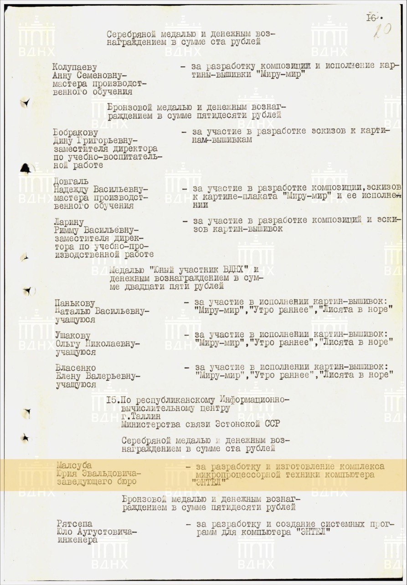
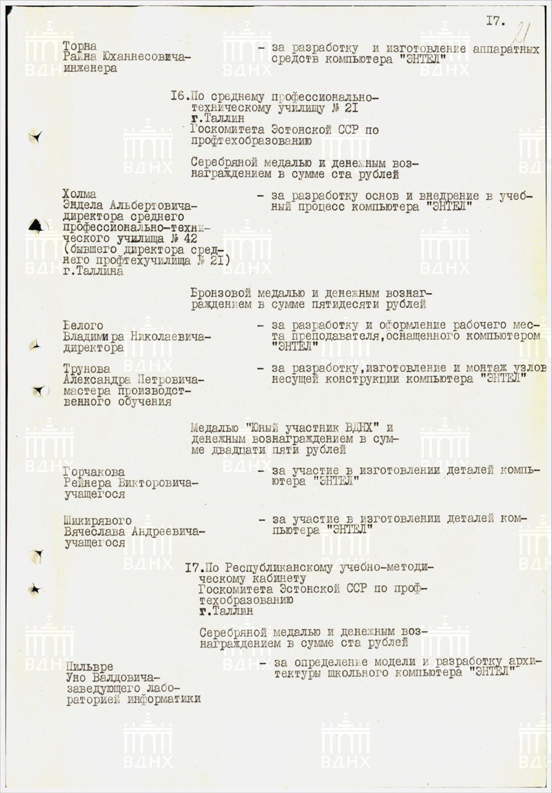
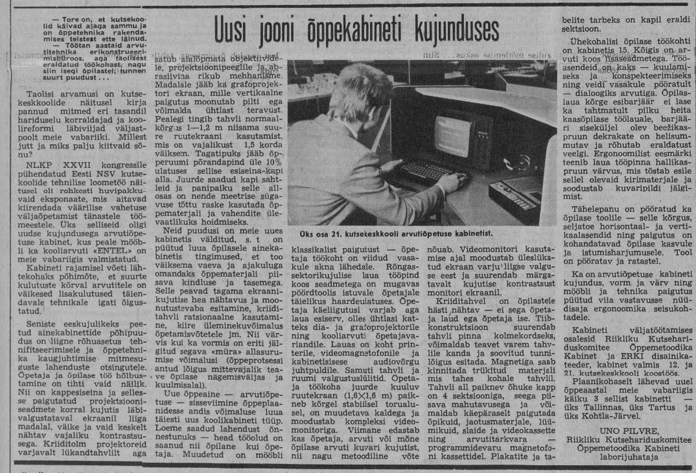

Varakevadine ENTEL arvuti esitlus aastast 1986
Jüri Malsub, Hannu Krosing ja väike Rein Malsub esitlevad ENTEL arvutit Eesti NSV aegses varakevadises Stroomi rannas.
Tutvustatakse erinevaid personaalarvuti ENTEL komponente.
Operaator Tiit Aunaste.
(vaata lisaks www.skypemuseum.com)
ENTEL ARVUTI sünd ei olnud riiklik tellimus vaid "ÕHINAPÕHINE" TPT ja TPI haridusega noorte inseneride huviprojekt mille viis ellu Sideministeeriumi arvutuskeskuse alluvuses Jüri Malsub koos oma meeskonnaga.
Kaera tn meeskonnal oli hea ettekujutus arvutite ehitusest olles suurarvuti Nairi 3-1 ja Nairi 4APM P/M hooldemeeskond alates aastast 1971. Sisuliselt oli tegemist Jerevani Matemaatiliste Masinate Teadusliku Uurimise Instituudi ja selle katsetehasega koostööst sündinud Nairi suurarvutite abiüksusega "EpHIIMM". Üksus mis käis üle terve Nõukogude Liidu paigaldamas, käivitamas ja taaskäivitamas Nairi suurarvuteid. Jerevani Matemaatiliste Masinate Teadusliku Uurimise Instituudi katsetehase peainseneriks oli eestlane Armand Uutmaa ja Nairi 3-2 peakonstruktoriks Aram Geoletsjan.
ENTEL arvuti sündis aastal 1979 vahetult peale seda kui Nõukogude Liidul õnnestus piraatkopeerida mikroprotsessor Intel 8080.
ENTEL'ist sai modulaarse ehitusega universaalarvuti mida on võimalik konfigureerida, täiendada ja laiendada vastavalt kasutusotstarbele. Erinevalt teistest Eesti NSV personaalarvutitest on ENTEL'i ekraan sünnist saadik värviline. ENTEL'il oli puutetundlik sensorklaviatuur mille hea kasutatavus ning töökindlus seisnes mahtuvuslike ja takistuslike omaduste õiges kombineerimises. ENTEL'i korpused valmistati punasest väärispuust Standardi tehases kus leidus selleks küllaldaselt "tootmisjääke".
Kunstikombinaadis ARS tehti ka väikeseeria metallist korpuseid sularaha eest ehk nii öelda mustalt. ENTEL'i trükkplaadid puuriti programmpingil Kaera 22 kohapeal ise ning edasi toodeti põhiliselt Lääne Kaluris. Seadmed monteeriti erinevate osapoolte kaasabil. Seda nii Kaera 22 palgal olnud monteerijate poolt kui ka Lauristini nimelise kolhoosi abitootmises. Toiteplokid toodeti Kaljuranna kolhoosi elektroonikatsehhis. Juhtus ka nii, et toodangu hulgas esines ENTEL'i mooduliks maskeerituna Soome TV värvi ja heli vastuvõtuks sobilikku elektroonikat mis leidis oma tee rõõmsate kodanike televiisoritesse.
ENTEL arvuti oli 1983 aastal samaväärne Soome vabariigis Nokia poolt toodetud arvutiga MikroMikko 1.
Edaspidi Nõukogude liidu mahajäämus lääne ees üha kasvas. Idablokk ei jõudnud mikroprotsessortehnikat sama kiiresti kopeerida kui loodi uut.
ENTEL oli algusest peale mõeldud tõsiseks töövahenduks.
ENTEL arvutiga kontrolliti ja analüüsiti sideliinide kasutust ning vastavalt saadud andmetele täiustati sidevõrke. Katseliselt ehitati Tallinna telefonikeskjaamas (numbrid 45) kohalike kõnede tarifitseerimise süsteem (Eesti NSV ajal oli lauatelefon kuumaksuga, telefonikeskjaamades puudus kõnede arvestamise süsteem). Samuti toimus ENTEL'i baasil Tallinna telefonikaugsidejaamas reaalajas kaugkõnede arvestus (Viktor Saarniit jt.).
ENTEL arvuti teleteksti mooduli abil sai vastu võtta Soome teleteksti ja raadiolainete ülilevi korral ka Rootsi televisooni teleteksti, alates 1988 aastast ka Sat TV teleteksti saateid.
Siinkohal tundub õige, et mainime ära ka selle, et esimeste Eesti NSV Sat TV vastuvõtu antennidena kasutati laste alumiiniumist kelke. Need oli müügivõrku saadetud Viiburi antennitehasest mis oli antennid kohandanud lastekelkudeks, lisades neile nahast rihmad, et lastel oleks millest kelgutamise ajal kinni hoida. Plaanimajandus käskis tehastel toota lisaks põhitoodangule ka laiatarbe kaupu, nii tehtigi. Kelgud olid 11Ghz signaali vasuvõtuks täiesti sobilikud. Kelgu hind oli 2.5 rubla.
ENTEL'i teleteksti mooduli kaudu jõudsid Eesti NSV'sse populaarsed Soome televisiooni kavad mida tollane KGB müüjatelt ära korjas ja asjaosaliste käsi väänas. ENTEL arvuti koos teleteksti vastuvõtjaga ehitati ka mõne tollase kõrgel positsioonil riigiesindaja televiisorisse. ENTEL'i teleteksti võimekus jõudis ka Ukrainasse kus Kiievi televisioon saatis ENTEL'i abil teleteksti saateid (mille mast sai raketitabamuse kohe Vene-Ukraina sõja alguses, kuid jäi püsti). Eestis kasutas ENTEL'it teleteksti saadete edastamiseks ALO TV, mille saatja ehitas Kiievis valmistatud saatja baasil Priit Kinks. Eesti televisiooni otsustati teleteksti lahendus hankida Soome vabariigist.
ENTEL arvuti pakkus interaktiivset videoõpet ja teadmiste kontrolli kasutades lisaseadmena Nõukogude Liidus toodetud VHS videomakki Elektronika VM-12 (Panasonic NV-2000 piraatkoopia). Videoõppe käigus esitles ENTEL ARVUTI televiisoris õppevideosid, peatas videomaki stop kaadriga, kuvas video peale küsimuse koos vastusevariantidega. Vastavalt kasutaja vastusele kuvati järgmine peatükk õppest või keriti videolint tagasi ning korrati. Videokasseti heliribale oli kodeeritud Entel arvuti juhtprogramm koos video ajakordinaatidega. Aastast 1987 koperatiivide ajastul kujunes ENTEL ARVUTI'st uuendatud VIKO ARVUTI (VIdeo KOmpuuter).
ENTEL arvuti interaktiivne videoõpe "VIILIMISE ÕPETUS"
ENTEL arvutiga digitaliseeriti olümpiasportlaste liikumist. Videopildi kaadritest viidi kindlad sportlaste kehapunktide kordinaadid arvutisse. Arvuti tarkvara analüüsis Hannes Tammeti poolt koostatud algoritmide abil sportlaste liikumise dünaamikat ja võrdles seda optimaalse mudeliga. Tulemuseks oli info kuidas saavutada effektiivsemat liikumist ja paremaid tulemusi. See projekt toimus koostöös Tallinna Pedagoogilise Instituudi kinesoloogia laboriga (Hans Gross, Rein Haljand). Analüüsiti ja korrigeeriti peamiselt tippsportlaste sooritusvõimet, suusatajatel (Andrus Veerpalu, Jaak Mae jt.) ja ujujatel. Varasemalt filmimise tehnikalt (Ahto Okas) toimus üleminek digitaalsele videotehnikale (VIKO). VIKO arstide ja treenerite töörühm (Lagle Suurorg, Viive Sirge jt) kasutasid uurimistöös ENTEL arvutit ja koolipoiss Priit Kasesalu poolt koostatud programme. Arvuti ütles sportlastele kuidas nad peavad treenima, et nendest saaksid maailmameistrid. Sportlased võtsid arvutit kuulda. VIKO arvuti tellis endale ka Moskva kehakulutuuri instituut.
ENTEL arvutit kasutati Vilniuse kriminoloogia instituudis näpujälgede ja allkirjade digitaliseerimiseks. Videokaameraga suurendati ekraanile kujutis, kursorihoova (joystick) abil liigutati ekraanil kursorit ja sisestati kujutiste võtmepunktide kordinaadid. Kõik sisestatud andmed liikusid suurarvuti andmebaasi. ENTEL'i abil oli võimalik uusi sõrmejägi ja allkirju sisestada ning võrrelda ja otsida sisestatut juba andmebaasis olevatega.
1986 aasta 7 mail toimunud "A.S. Popovi nimelise Raadiotehnika, Elektroonika ja Side Teaduslik-Tehnilise Ühingu" raadiopäeva tähistamise konverentsil "jäi silma" nelja ENTEL arvuti samaaegne sini-must-valge värvide kuvamise võimekus. Seda poliitilist nõrka kohta teistel Eesti NSV's loodud mustvalgetel arvutitel ei esinenud. Koheselt hakati rääkima ka värvide halvast mõjust laste silmadele. Selle teemaline diskussioon Eesti NSV võimuesindajatega jõudis otsapidi ka ajakirjandusse kus Uno Pilvre selgitas tõrksatele ekspertidele värvilise ekraaniga arvuti eeliseid õppetöös. ENTEL arvuti kahjulik mõju koolilaste silmadele võis olla faktor mis tõi ENTEL arvutile kolmanda (viimase) koha 1986 aastal toimunud Eesti NSV kooliarvuti konkursil mille korraldas sama Popovi ühing. Kolmas koht oli loogiline kuna ENTEL oli ainuke konkursil osalenud värvilise ekraaniga arvuti.
Samal 1986 aastal toimunud üleliidulisel VDNH rahvamajanduse näitusel premeeriti ENTEL arvutit hõbemedaliga, seda hoolimata värviekraanist. Maksti ka preemiat. Näitusel osalemine leidis aset koostöös Eesti NSV Kutsehariduse Komiteega, Uno Pilvre algatusel.
 
Jüri Malsub sai ENTEL arvuti loomise
eest
preemiat 100 rubla, teised said vähem Medaleid ja preemiad ENTEL'i väljatöötamise eest said ka isikud keda ENTEL'i meeskond väga hästi ei tundnud
ENTEL leidis kasutamist kooliarvutina Eesti NSV Kutsehariduskoolides kus olid ENTEL arvutitega sisustatud arvutiklassid koos spetsiaalse Uni Pilvre poolt välja töödatud arvutiklassi mööbliga.

Artikkel ENTEL'i arvutiklassist ajalehes Nõukogude Õpetaja 26 juulil 1986
Tehisintellekt oli ka 1980'ndate Eesti NSV's väga kuum sõna ja sellega puutus loomulikult kokku ka ENTEL. Oli olemas LISP'is programmeeritud loomade ära arvamise programm mis nagu võluväel arvaski ära ühe kooliõpetaja poolt mõeldud looma. Kõik olid tehisintellektist väga vaimustatud.
ENTEL arvuti meeskonnast kasvasid välja tulevased SKYPE loojad Priit Kasesalu ja Jaan Tallinn (hiljem liitus Ahti Heinla) kes 7 klassi poistena alustasid programmeerimist ENTEL arvuti loojate meeskonna kooseisus. Klassivennad Mikk Orglaan, Priit Kasesalu ja Jaan Tallinn programmeerisid oma esimesed programmid Nairi 4 arvutil ja esimesed arvutimängud ENTEL arvutil. Jaan Tallinn, valmistas tipptasemel juhttarkvara.